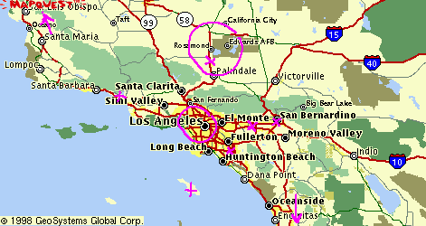
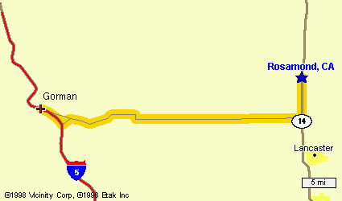
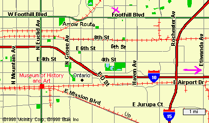
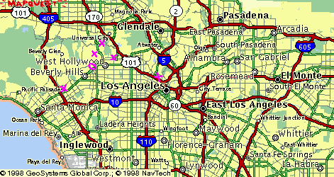
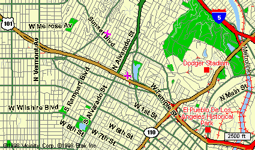
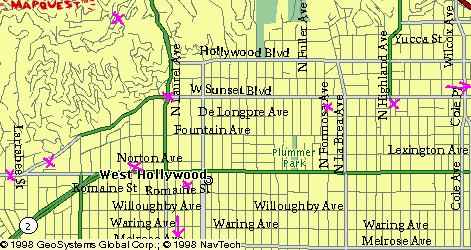
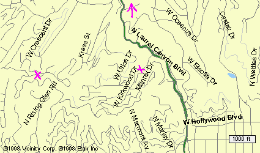
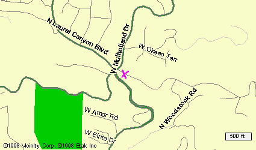
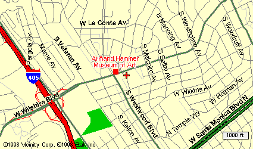

Заппа'zУх!Ой!
русский более или менее регулярный бюллетень для поклонников американского композитора
Frank'а Vincent'а Zappa'ы
Выпуск.9 (19 августа 1998)
L.A.
Лето - пора великих географических открытий. Обостренное пространственное мышление зовет в дорогу, рыболова тянет нырнуть, чтобы изучить донный рельеф и причуды течений, а голубятник надевает парашют, намереваясь затем длинными зимними ночами рассказывать любимым птичкам истории об облаках, перистых и кучевых.
Ну, а нас, упертых и безнадежных, поклонников одного композитора из L.A., конечно, манит то место американского континета, где суша заканчивается водой, ищущие объезд автомобили, урча, несутся по шесть штук в ряд в противоположных направлениях, а отчаявшиеся приземлиться самолеты, ревут над головой, сходясь и расходясь. А как же, в этом городе заправочных станций, кузовных мастерских и забегаловок, специализирующихся на регулировке развала и схождения, жил и творил в самой гуще самой американской на свете суеты и скуки главный индустриальный гений XX века - Фрэнк Винсент Заппа. Так почему бы, в самом деле, не окунуться, не проникнуться, не ощутить?
Тем более, что ареал обитания нашего кумира до смешного мал, максимум 200 на 200 миль, за какую-то неделю, даже при неукоснительном соблюдении калифорнийского ограничения 65 миль в час, можно все закоулки исследовать, просто нужно, пока все хорошо, и угроза быть накрытым одной метко пущенной ракетой СС-20 практически нулевая.
Итак...
Город Лос-Анджелес и окрестности

Детство, юность, отрочество (Lancaster Area)
Billy the Mountain
Billy the Mountain
A regular picturesque
Postcardy mountain
Residing between lovely
Rosamond and Gorman

Вот она, желтая детская песочница пустыни Мохав (Mojave), здесь под брюхом военно-воздушной базы Эдвардс в квадрате Ланкастер семья вольнонаемного военного металловеда и метеоролога Фрэнка Винсента Заппы младшего первого жила на одном месте целых пять лет, до самого 1959 года, достаточное время, чтобы старший сын мистера Заппы (Фрэнк Винсент младший второй :-) мог познакомиться с Доном Влитом, будущим Капитаном Бифхартом, выучить наизусть соло из "Three Hours Past Midnight" Джонни 'Гитара' Уотсона, истратить именинные пять долларов на звонок в Нью-Йорк своему кумиру, французскому композитору Эдгару Варезу, ну, и наконец закончить школу.
Кстати, пластинку Вареза, свой первый долгоиграющий диск, маленький Фрэнки купил в точке с название La Mesa, это пригород самого южного из больших калифорнийских городов Сан-Диего (миль 150 down south from L.A. по федеральной номер 5), семью на какое-то время и туда притаскивал неусидчивый папа Заппа, если точно, то в восточный угол полиса - El Cajon, из которого родители на счастье маленького химика Фрэнка унесли ноги в Ланкастер как раз после феерически успешного взрыва посреди школьного праздника заряженных мальчонкой по собственносу рецепту самодельных петард.
Это было в 53-ем или 54-ом, а высадились Заппы в золотом штате, далеко на севере от малой родины в местечке Монтерей, которое позднее, в 68-ом прославилось таким мероприятием, как рок-фестиваль, впервые в истории бизнеса организовавшим наркош с феничками и шнурочками, в бюстгальтерах и без оных на совместное прослушивание Хендрикса, Ху и Дженис Джоплин.
В 1950-ом это была совсем скучная зона полного распада и увядания, где без пальто, как собственно и в близлежащем Сан-Франциско, могло быть холодно не только зимой, но и летом. Не помогло и привычный переезд, на сей раз в притулившийся по соседству населенный пункт городского типа Pacific Grove.
Впрочем, именно в этой Богом забытой точке возле Тихого океана, у будушего великого композитора впервые обнаружились музыкальные способности, одиннадцати лет от роду он стал проявлять интерес к игре на барабане, и даже учился непростому этому искусству в летнем лагере у бравого шотландца мистера Keith'а McKillop'а.
Отсюда уже, из Pacific Grove, папа с мамой его вместе с братьями Bobby и Carl'ом и сестрой Candy увезли для знакомства с миром ритм и блюза в El Cajon, что на боку у Сан Диего. С короткой, эх, непоседливый народ эти вольнонаемные ракетные математики и стратегические астрономы, остановкой в пригороде уже Лос-Анджелеса с названием Pomona.
Сюда, замкнув в 1959-ом, таким образом, замысловатую петлю, переселился после окончания ланкастерской школы уже один, сам по себе, девятнадцатилетний Фрэнк Заппа. Здесь целый семестр в Chaffey Junior College он изучал теорию музыки, на большее, увы, не хватило, то ли все быстренько понял, то ли помешала женитьба на Kay Sherman.
Впрочем, и с Kay FZ довольно быстро разобрался, а всему виной Ronnie Williams
(Ronnie helping Kenny
helping burn his poots away!)
познакомивший в 1960 году уже исписавшего к тому времени горы нотной бумаги Фрэнка с Paul'ом Buff'ом, хозяином любительской студии звукозаписи, занимавшей пару комнат на первом этаже по адресу 8040 North Archibald Ave. (это в двух шагах от пересечения Archibald Ave. с Foothill Blvd, последний же в свою очередь не больше не меньше, как отрезок Route 66) в районе ранчо Cucamonga.
Out in Cucamonga
Many years ago
Near a Holy Roller Church
There was once a place
Where me and a couple of friends
Began practicing for the time
We might go
On TV

Из этой самой студии, в 63-ем ставшей его собственной Studio Z, молодого искателя приключений музыкального характера Фрэнка Винсента Заппу, всего лишь прозорливо учившегося позировать перед телекамерой, озверевшие псы-легавые, как повествует летопись, и потащили в Сан-Бернадинскую каталажку.
Come on with me
Down in San Ber'dino
Just 60 miles, 60 miles
Down the San Ber'dino freeway
They got some dark green air
An' you can choke all day
Поголодав десять дней в душной, набитой немытым сбродом камере, Заппа вышел на волю с условно-испытательным сроком и освобождением от воинской повинности. С этим скромным багажом он и отвалил прочь из некультурных окрестностей в самый центр низкорослых бетонных коробушек под названием L.A. - Лос-Анджелес, с тех пор лишь мысленно, в песенных стишках возвращаясь на недружелюбные окраины Great Metropolian Area.
Этот форпост общества Джона Берча на южных подступах к городу мечты почему-то не оказался воспетым, но упоминания достоин как по географическим показаниям, так и в связи с тем, что именно здесь, на территории, контролируемой люберами из местных ковбоев, Orange County, обретались довольно долго два изначальных члена группы Матери Изобретения. Индеец чероки Джимми Карл Блэк - барабаны и мексиканец Рой Эстрада - бас. И тому, и другому перед возвращением домой после вечерних лабаний в помонских кабачках, приходилось особым образом укладывать волосы, скрывая истинную длину и фасон. Поскольку зубы для рок-музыканта так же важны, как и кудри черные до плеч.
Camarillo - город между гор на полпути до Санта-Барбары
She had that
Camarillo brillo
Flamin' out along her head,
I mean her Mendocino bean-o
By where some bugs had made it red.
Catalina - остров, где хрюшки омывают сапоги в водах Тихого Океана
Oh, here comes GREGGERY,
Little GREGGERY PECCARY
The nocturnal gregarious
Wild swine
A peccary
Is a little pig
With a white collar
That usually hangs around
Between Texas and Paraguay
Sometimes ranging as far
west as Catalina
Лос-Анджелес сам по себе (без пригородов)

Bellevue Ave. - на холме возле стадиона

Выселенный из кукамонгской студии Z Фрэнк в конце концов закатился в один из самых простеньких районов Западного Голливуда на улицу Bellevue Ave.. Это первое счастливое место в жизни Заппы. Музыканта из дома номер 1819 и его группу Матери новый менеджер Херби Коэн стал двигать в самые горячие голливудские клубы той поры - The Trip, Whisky a Go-Go, The Action. Он же, Коэн, заманил искателя талантов из MGM Тома Уилсона в Whisky, результатом того минутного знакомства в итоге стала запись первого альбом Мothers Of Invention "Freak Out!". Здесь же были написаны такие знаменитые песни, как Troubles Every Day, Bow Tie Daddy и Hungy Freaks, Daddy. В общем, славный уголок, хоть сам домик арендуй!
Занятно, что в какой-то миле, двух (по здешним понятиям - буквально за углом) от 1819 Bellevue в маленьком домике за смешной дачной оградкой сейчас живет и не устает надеяться на удачу одна из самых скандально известных подруг Фрэнка Винсента - Nigey Lennon, автор славной, но неизменно вызывающей отчаянные споры книги, Being Frank: My Time With Frank Zappa.
Вечно что-то придумывающая Найджи ныне сочиняет музыку, возможно весной следующего года компания Muffin Records даже выпустит пластинку с ее песнями "Reinventing the Wheel", самое однако замечательное, что петь их собирается не Мадонна, не Тина Тернер, а младшая сестра Дяди Фрэнка - Candy Zappa! Herself!
Freak Out dungeons of the 60s (Поле боя)

Очень престижный клуб на Sunset Strip, здесь в начале шестидесятых царил хитовый в ту пору Johnny Rivers, остальным разрешали потренькать, попиликать, только когда Джонни отбывал оттянуться на гастролях. Вечера с участием Матерей к явному неудовольствию хозяина Элмера Валентино удавались не всегда.
Cheese:
The first thing that attracted me to the Mothers music
Was the fact that they played for twenty minutes
Everybody was hissing, and booing, and falling of the dance floor
And Elmer was yelling at them to get
Off the stage and turn down they're amplifiers
Случалось Фрэнку с коллегами существенно снижать суточную норму потребления алкоголя публики и в другом заведении того же хозяина The Trip. Впрочем, если же Матери вели себя прилично и выдавали пристойную музыку, под которую народ мог флиртовать и ломаться на танцевальном пятачке, Элмер парням платил вполне прилично, по хорошей профсоюзной ставке.
Один из самых демократичных голливудских клубов той поры, 8265 Santa Monica Blvd., первый, пустивший на главные подмостки провинциалов из Помоны с Заппой во главе. Симпатичное место, где в 65-том можно было слушать Фрэнка, а наблюдать Джима Моррисона, сидящего за соседним столиком, еще не знаменитого, но уже бухого.
Просто симпатичное заведение для пижонов на пересечние Sunset и Crescent Heights, излюбленное место шумных полицейских облав на кудрявых и мохномордых, навеки в наших сердцах.
I hear the sound of marching feet...
down Sunset Blvd. to Crescent Height...
And there... at Pandora's Box...
we are confronted with...
a vast quantity of.. Plastic People ---
Take a day
And walk around
Watch the nazis
Run your town
Впрочем, настоящая пижонская курская дуга здесь (ровно квартал за край карты по стрелке). У замечательной забегаловки с очень дешевой и вкусной хавкой, на которую собирались тучи L.A. freak'ов, то есть стиляг, любителей выделываться, дополнительно к меню неизменно предлагался жандармский мордобой с погрузкой в казенный автотранспорт.
Concentration Moon
Wish I was back in the alley
With all of my friends
Still running free
Hair growing out
Every hole in me
AMERICAN WAY
Threatened by us
Drag a few creeps
Away in a bus
AMERICAN WAY
Prisoner: lock
SMASH EVERY CREEP
IN THE FACE WITH A ROCK
Don't cry
Gotta go bye bye
SUDDENLY: DIE DIE
COP KILL A CREEP!
Pow pow pow
В паре кварталов от этого места военных действий имели резиденции (один налево, другой направо) два основоположника лос-анджелесского freak'ования, теоретики и практики бесшабашного выверта и загибона скульптор Vito Paulekas (Emperor of the United Mutations of Los Angeles, как сказано на обложке альбома Freak Out!).
И Carl Orestas Franzoni - полоумный танцор, в узких подчеркивающих его мужские достоинства брючках. Ему, неуемному, посвящена первая песня первого альбома группы Матери Изобретения - Hungry Freaks, Daddy!
He is freaky down to his toe nails.
Some day he will live next door to you
and your lawn will die.
По другую сторону иллюминированной просеки с названием Бульвар Санта Моника, на пересечении Highland Ave. и бульвара Sunset находилась студия звукозаписи, в которой однажды ночью 1966-го собрались все разноцветные весельчаки города ангелов, чтобы под руководством организатора строго спланированных и расчитанных музыкальных беспорядков и безобразий Фрэнка Винсента Заппы записать песенку It Can't Happen Here.
It can't happen here
It can't happen here
I'm telling you, my dear
That it can't happen here
Надо заметить, к тому времени и сам FZ из мексиканской простоты Bellevue перебрался поближе к огням разнообразных заведений общественного питания с музыкой и без, жил холостяком на авеню Формоза, и как идущий в гору композитор, гитарист и лидер группы мог уже позволить себе не горбатить за гроши в отделе синглов магазина Wallich's Music City, в который, если пойти по стрелке, упрешься немедленно, точно на пересечении Sunset и Vine.
Kirkwood Dr. and Log Cabin (южная граница Laurel Canyon)
Cheese": Hello, teenage America,
My name is Suzy Creemcheese.

Впрочем, было еще одно место, где Фрэнка всегда ждал и кров, и стол в эпоху крепнущего материнства. Дом Памелы Зарубики (Suzy Creemcheese) в Laurel Canyon на Kirkwood Drive.
Cheese:
That house had your shit all over
And we had cats, we had flies
we had lot of crabs
That we proceeded to give
to everyone in Laurel Canyon
except Elmer
and Phil,
вернуться к южной границе Laurel Canyon ...
Сюда Фрэнки ездил, к великому сожалению девушки, вести с ней долгие задушевные беседы. И всего лишь:-(((
На что-то более серьезное его подвигло лишь знакомство с новой подругой Сузи-Памелы Gail Sloatman. В общем, скрывать не станем, тут-то Лунный Модуль, то есть, Moon Unit Zappa и была зачата, чтобы спустя положенный срок родилась в городе Нью-Йорке. Это очень, очень далеко, шесть часов на самолете против солнца лететь.
По возвращении из Нью-Йорка Gail, уже Заппа, сняла для семейства за 700 USD в месяц (курс ММВБ существенно отличался от нынешнего в том беспокойном 1968) целое маленькое ранчо Log Cabin неподалеку от места, где подарила своему избраннику самое дорогое, что есть у девушки.
Между прочим, известное фото вурдалакоподобной Кристины Фрыки, украшающее обложку альбома Hot Rats, сделано в ограде этого милого семейного приюта.
вернуться к южной границе Laurel Canyon ...
Ну, а год спустя, в 1969-ом, денег, заработанных деловитым Фрэнком вполен хватило на собственный дом, который и был куплен все в том же шикарном районе Laurel Canyon, среди деревьев и цветов на отрогах Санта-Моники.
вернуться к южной границе Laurel Canyon ...

Отсюда, из трехэтажного дома, похожего на крепость Фрэнк в последующие двадцать четыре года если и выходил, то не надолго, так, смотается в полугодовое турне и сразу же обратно. Здесь, в цокольном этаже осталась его удивительная студия, здесь по прежнему живет его вдова и его дети, Moon, Dweezil, Ahmet и Diva.

Ну, а тело мастера в декабре 1993-го после тихих семейных проводов было отправлено под зеленый дерн роскошного кладбища Westwood Memorial Park. Здесь, в компании с Мерлин Монро и Армандом Хамером под чистой немаркированной плитой #100 в секции D оно превращается в траву, которую регулярно стригут какие-то грубые немузыкальные мужики заработка ради.
Кстати, рядом, под номером 97 могила Роя Орбисона. Какой-то поклонник певца навел фотоаппарат на это место и щелкнул. Можете и вы щелкнуть, полюбопытствовать.
Все, приехали, прошлись по местам боевой славы и по домам. Осталось лишь с признательностью и восхищением подтвердить, да, все походные карты для вас были сгенерированы благодаря паре выдающихся серверов: раз - www.mapblast.com, и два - www.city.net.
Привет!
Искренне Ваш, Владимир Советов
http://www.arf.ru/
| Домой | Заппа'zУх!Ой! | Поиск | Хозяин |